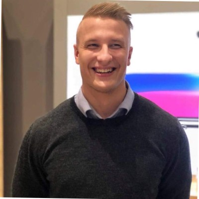

Mød iværksætteren
Sebastian Fuglsang

2021-2023
Entreprenørskab og design / IBA
Hej, jeg hedder Sebastian og jeg er stifteren af Nhordic. Jeg mindes at min iværksætterdrøm for alvor dukkede op, da Martin Thorborg holdte et foredrag på IBC Kolding, hvor jeg på daværende tidspunkt læste min HHX - Innovation.
Jeg stiftede min første virksomhed "MitBilligeUr.dk / Simplewatch.dk" kort efter jeg færdiggjorde min uddannelse. Jeg havde importeret en masse billige ure hjem fra Kina, som jeg forsøgte at sælge online via min egen udviklet hjemmeside. Det gik ikke fremragende, men jeg lærte en MASSE om webudvikling, salg og marketing, som jeg kunne tage med videre til min næste virksomhed "Nhordic".
Jeg stiftede Nhordic nognelunde samme tidspunkt, som jeg begyndte at studere en MFØ på IBA. Idéen bag Nhordic var at sælge skægpleje med dansk kvalitet til fair priser, via en abonnementsordning. Jeg oplevede en overraskende høj efterspørgsel for mine produkter, men ligeledes blev jeg mødt af en masse udfordringer i forhold til at drive en abonnemtsløsning, og derfor valgte jeg at skrotte abonnementsløsningen og omdanne min hjemmeside til en mere traditionel webshop, hvor kunderne kunne købe produkterne enkeltvis eller som pakker, hvorved kunderne kunne opnå samlerabat. Ændringen til en traditionel webshop, gjorde at min omsætning gik fra ca. 100.000 kr. årligt, til lidt over 500.000 det første år. Siden da har virksomheden forsat vokset og er nu budgetteret til 1.000.000 kr. i år.